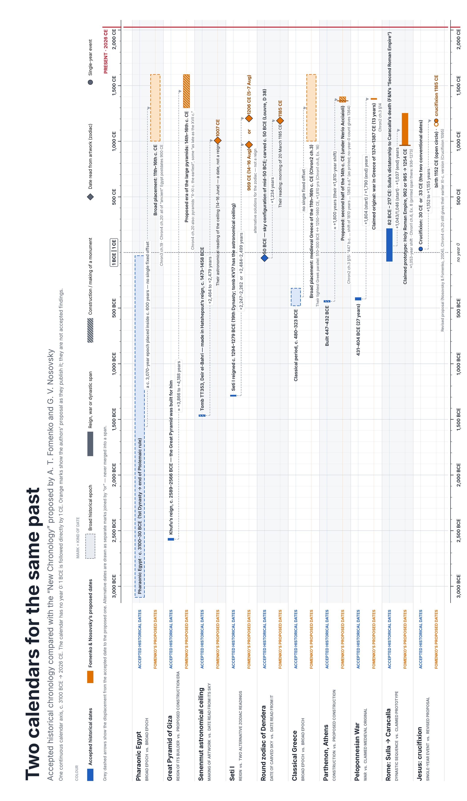

Written 10/5/2026. Every number is from the authors’ own PDFs or a museum, university or antiquities page. Where their printed numbers disagree with each other, both are shown. The page beats the summary.
Fomenko and Nosovsky say most of “ancient” history is medieval history copied backward. I put ten of their cases on one axis, 3100 BCE to 2026 CE. Blue is the accepted date. Orange is theirs. Every gap is counted without a year 0.
Eight of the ten have a number. Their median move is about 1,800 years later. The biggest is the Great Pyramid: Khufu’s reign, c. 2589–2566 BCE, moved into a 14th–16th-century build era. That is +3,866 to +4,188 years. The smallest is Rome, Sulla to Caracalla, moved onto the Holy Roman Empire: +1,037 to +1,046 years. Egypt and Classical Greece don’t get a number. They are placed as whole eras inside the 11th–16th centuries.
| Subject | Accepted | Proposed | Move (yrs) | 3100 BCE → now |
|---|---|---|---|---|
| Pharaonic Egypt era vs era |
c. 3100–30 BCE | 11th–16th c. CE | no single offset | |
| Great Pyramid builder’s reign vs build era |
Khufu, c. 2589–2566 BCE | 14th–16th c. CE | +3,866 to +4,188 | |
| Senenmut ceiling artwork vs sky reading |
c. 1473–1458 BCE | 1007 CE | +2,464 to +2,479 | |
| Seti I reign vs two zodiac readings |
c. 1294–1279 BCE | 969 or 1206 CE | +2,247…+2,499 | |
| Round Dendera zodiac carved sky vs reading |
50 BCE | 20 Mar 1185 CE | +1,234 | |
| Classical Greece era vs era |
c. 480–323 BCE | 11th–16th c. CE | no single offset | |
| Parthenon build vs build |
447–432 BCE | late 14th c. CE | ≈ +1,800 | |
| Peloponnesian War war vs war |
431–404 BCE | 1374–1387 CE | +1,790 to +1,804 | |
| Rome: Sulla → Caracalla dynasty vs prototype |
82 BCE – 217 CE | 962/965–1254 CE | +1,037 to +1,046 | |
| Crucifixion event vs revised proposal |
30 or 33 CE | 1185 CE (birth 1152) | +1,152 to +1,155 |
The two columns don’t always measure the same thing, and the chart keeps them apart.
There are three offset families. Each one is a different distance from the same origin. You don’t add them. Chron1 ch.6 §7 says it plainly: “All the three shifts are counted off the same point.”
Right: copy = original − 333/360, or − 1,053, or − 1,778…1,810. Chron2 ch.3 names them the Roman–Byzantine, Roman and Graeco-Biblical shifts.
Wrong: 333 + 1,053 + 1,778 = 3,164. Nobody proposes that number. There is also no universal 600-year correction anywhere in the sources.
Gaps measured between two copies, not from the origin, can equal a difference or a sum. Fig. 6.20 labels Example 6 “720 = 1053 – 333.” Table 2 calls Example 2’s ≈1,300 “the sum of two basic shifts.”
These are Chron1 ch.6, Examples 1–20. Shifts are copied from the text, tables, captions and figure notes. 8 examples print numbers that disagree with each other. 4 print no fixed offset at all.
| # | Dynasty a | Dynasty b | Shift as printed | |
|---|---|---|---|---|
| 1 | Second Roman Empire 82 BC–217 AD | Third Roman Empire 270–526 | ≈333 · caption ≈330–360 | DISAGREES |
| 2 | Israel kings 922–724 BC | Third Roman Empire 300–476 | ≈1,300 (“sum of ≈1000 and 300”) | |
| 3 | Judah kings 928–587 BC | Eastern Roman Empire 300–552 | none printed | NO OFFSET |
| 4 | Popes 140–314 | Popes 324–532 | none printed | NO OFFSET |
| 5 | Carolingians 681–887 (captions: 888) | Eastern Roman Empire 324–527 | ≈360 · mean 359.6 | DISAGREES |
| 6 | Holy Roman Empire 983–1266 | Roman Empire 270–553 | ≈720 = 1053 − 333 · mean 723 | |
| 7 | Holy Roman Empire 911–1254 | Habsburgs 1273–1637 | ≈362 · ≈360 · mean 373 | DISAGREES |
| 8 | Holy Roman Empire 936–1273 | Second Roman Empire 82 BC–217 AD | ≈1,053 · mean 1,039 | |
| 9 | Judah kings 928–587 BC | Holy Roman Empire 911–1307 | ≈1,830 · 1,839 (math: 1,838) | DISAGREES |
| 10 | Israel kings 922–724 BC | Roman coronations 920–1170 | ≈1,840 · “920 + 922 = 1842” | DISAGREES |
| 11 | Russian czar-khans 1276–1600 | Habsburgs 1273–1600 | 0 — “no shift” | |
| 12 | Armenian Catholicoses (from 970) | Holy Roman Empire + Judah | 60 (math: 59) · 1,839 | DISAGREES |
| 13 | Byzantium I 527–829 | Byzantium II 829–1204 | ≈340 | |
| 14 | Byzantium II 867–1143 | Byzantium III 1204–1453 | ≈330 (Byz II range ≠ Ex. 13) | DISAGREES |
| 15 | Russia 945–1174 | Russia 1363–1598 | 410 | |
| 16 | “Ancient” Greece 510–300 BC | Medieval Greece 1250–1460 | ≈1,810 | |
| 17 | England 640–1330 | Byzantium 380–1453 | text 210–270 · fig. ≈275 / ≈120 | DISAGREES |
| 18 | Greek kings · Lacedaemon | Byzantium · Mistras | none printed (fig. typo “330-397”) | NO OFFSET |
| 19 | Regal Rome of Livy | Third Roman Empire 300–552 | ≈1,050 | |
| 20 | Regal Rome of Livy | Holy Roman Empire + Byzantium | none printed | NO OFFSET |
Riven · pass over Chron1 ch.6, Chron2 ch.3, Chron3 ch.19, Chron4 ch.20 · every figure checked against the printed page · page wins over summary

Rotated to fit the page. The full poster, including the 20-example panel, is in fomenko_new_chronology_timeline.pdf.